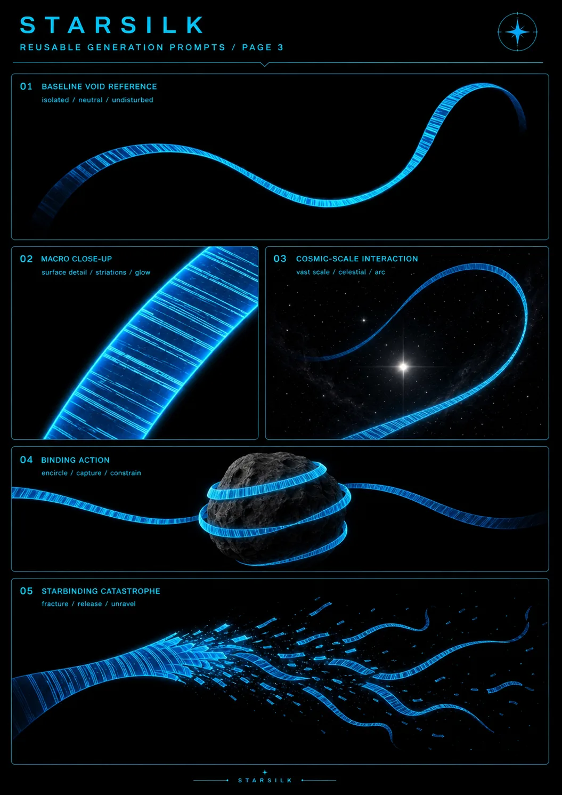

Jazen
- Stable ID
jazen- Structural type
- character-section
- Canon status
- unknown
- Spoiler level
- major
Published source content
Core record
Jazen and Codec are separate people. Jazen is Codec’s romantic and ideological partner. His importance is relational: what happens to him makes the machinery of Starsilk, archives, divine authority and the Obsidian system personal and intolerable to Codec.
The Obsidian event
Codec witnesses the Obsidian Armor trap Jazen and feed itself on his suffering. The event becomes evidence, not a rescue-quest objective. Codec later sees Starsilk data flowing into a star and understands that stellar cores preserve the dead as archive residue and structural memory.
Effect on Codec
Jazen is the wound, evidence and point of no return that helps catalyze Codec’s movement from grieving partner to architect of the Starbinding. Codec wears Jazen’s blood as a physical grief-marker, but his later program expands beyond Jazen into an attack on the structure that makes such violence possible.
